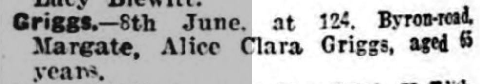
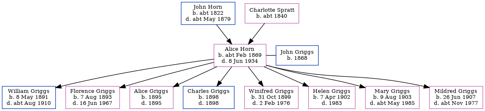

Alice Clara Griggs (née Horn) cFeb 1869 - 1934
[ Home ] | [ Calendar ] | [ Surnames Index ] | [ Errors ] | [ Family History ]The child of John Horn (an agricultural labourer) and Charlotte Spratt (a laundress), Alice Horn, the first cousin three-times-removed on the father's side of Nigel Horne, was born in Northdown, Margate, Kent, England c. Feb 18691, was baptised in Margate, Kent, England on 18 Apr 1869 and also married John Griggs (a general labourer with whom she had 8 children: William James, Florence May, Alice Maud Mary, Charles Walter, Winifred Doris, Helen Maud, Mary Ann and Mildred Sylvia) there at Holy Trinity Church on 27 Apr 1890.
During her life, she was living at her birthplace on 2 Apr 18717; at Victoria Road in Margate on 3 Apr 18818; at Church Street in Margate on 5 Apr 18916; at 103 Milton Road in Margate on 31 Mar 19014, on 2 Apr 19115 and in 19153; and at 124 Byron Avenue in Margate in 1934.
She died on 8 Jun 1934 in Thanet, Kent, England2.
Parents
- John was born c. 1822
- Charlotte Anne was born c. 1840
Children
- William James was born on 8 May 1891
- Florence May was born on 7 Aug 1893
- Alice Maud Mary was born in 1895
- Charles Walter was born in 1898
- Winifred Doris was born on 31 Oct 1899
- Helen Maud was born on 7 Apr 1902
- Mary Ann was born on 9 Aug 1903
- Mildred Sylvia was born on 26 Jun 1907
Citations
- England & Wales births 1837-2006 - Findmypast
- England & Wales deaths 1837-2007 - Findmypast
- British Army WWI Service Records, 1914-1920 Online publication - Provo, UT, USA: Ancestry.com Operations Inc, 2008.Original data - War Office: Soldiers' Documents, First World War 'Burnt Documents' (Microfilm Copies); (The National Archives Microfilm Publication WO363); Records created or inherited
- 1901 England, Wales & Scotland Census - Findmypast (was age 34 and the wife of the head of the household)
- 1911 Census for England & Wales - Findmypast (was age 42 and the wife of the head of the household)
- 1891 England, Wales & Scotland Census - Findmypast (was age 21 and the sister of the head of the household)
- 1871 England, Wales & Scotland Census - Findmypast (was age 2 and the daughter of the head of the household)
- 1881 England, Wales & Scotland Census - Findmypast (was age 12 and the daughter of the head of the household)
Media
Thanet Advertiser - 3 May 1890

Thanet Advertiser 19 June 1934

Thanet Advertiser 19 June 1934
England & Wales births 1837-2006 - BMD/B/1869/1/AZ/000329/211
England & Wales deaths 1837-2007 - BMD/D/1934/2/AZ/000364/012
1911 Census for England & Wales - GBC/1911/RG14/04491/0387/2
1901 England, Wales & Scotland Census Transcription - GBC-1901-0007426804
1891 England, Wales & Scotland Census Transcription - GBC-1891-0005862203
England & Wales marriages 1837-2005 Transcription - BMD-M-1890-2-AZ-000158-135
England Births & Baptisms 1538-1975 - R_884650880
Kent Baptisms - GBPRS/CANT/B/96274273
Kent Baptisms - GBPRS/CANT/B/96223245
Family Tree
Map
Generated by ged2site. Last updated on Jul 3, 2024
Known Issues
Marriage date (27 Apr 1890) has no citations
Residence record for 1934 contains no citation
Listed in the residence for 5 Apr 1891, but spouse John Griggs is not
Listed in the residence for 1915, but spouse John Griggs is not
Listed in the residence for 1934, but spouse John Griggs is not